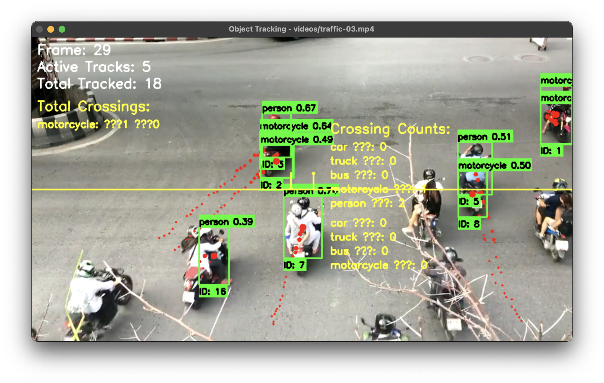

Basic Object Tracking
from yolozone.objects import ObjectDetector
import cv2
# Initialize detector
detector = ObjectDetector(model="yolov8n.pt")
def process_video(video_path):
cap = cv2.VideoCapture(video_path)
while True:
ret, frame = cap.read()
if not ret:
break
# Detect and track objects
results = detector.detect_objects(frame, conf=0.3, track=True)
# Update tracks
tracks = detector.tracker.update(results)
# Draw tracks with trails
frame = detector.tracker.draw_tracks(frame, tracks, draw_trails=True)
# Display frame
cv2.imshow("Object Tracking", frame)
if cv2.waitKey(1) & 0xFF == ord('q'):
break
cap.release()
cv2.destroyAllWindows()Features
- Unique ID assignment for each object
- Motion trail visualization
- Persistent tracking across frames
- Automatic track management
Line Crossing Detection
# Define counting line
line_start = (0, frame_height // 2)
line_end = (frame_width, frame_height // 2)
# Process video with line crossing detection
def process_tracking_video(video_path, detector):
cap = cv2.VideoCapture(video_path)
# Initialize cumulative counts
total_counts = {
'up': defaultdict(int),
'down': defaultdict(int)
}
while True:
ret, frame = cap.read()
if not ret:
break
# Detect and track
results = detector.detect_objects(frame, conf=0.3, track=True)
tracks = detector.tracker.update(results)
# Update line crossings
crossings = detector.tracker.update_line_crossings(
tracks, line_start, line_end)
# Update total counts
for direction in ['up', 'down']:
for cls, count in crossings[direction].items():
total_counts[direction][cls] += count
# Draw visualization
frame = detector.tracker.draw_tracks(frame, tracks)
frame = detector.tracker.draw_counting_line(
frame, line_start, line_end, total_counts)
cv2.imshow("Line Crossing Detection", frame)
if cv2.waitKey(1) & 0xFF == ord('q'):
break
print("Final Counts:", dict(total_counts))

Example showing line crossing detection with counts
Advanced Tracking Features
# Get detailed track information
tracks_array = detector.tracker.get_all_tracks()
for track in tracks_array:
print(f"Track ID: {track['track_id']}")
print(f"Class: {track['class']}")
print(f"Track Length: {track['length']}")
print(f"Displacement: {track['displacement']:.2f}")
print(f"Current Position: {track['current_pos']}")
print("---")Advanced Features
- Track history management
- Movement analysis
- Displacement calculation
- Track statistics
Tracking Best Practices
- Adjust
max_movement_thresholdbased on object speed - Set appropriate
min_detection_confidencefor scene - Use
max_inactive_framesto control track persistence - Consider scene scale when setting line positions
- Filter relevant classes to improve tracking stability
- Handle track ID management for long-term tracking
Troubleshooting
Common Issues
- ID Switching
- Adjust
max_movement_threshold - Increase
min_detection_confidence - Reduce
max_size_changethreshold
- Adjust
- Missing Tracks
- Increase
max_inactive_frames - Decrease
min_detection_confidence
- Increase
- False Crossings
- Adjust line position
- Increase
min_hitsfor track confirmation